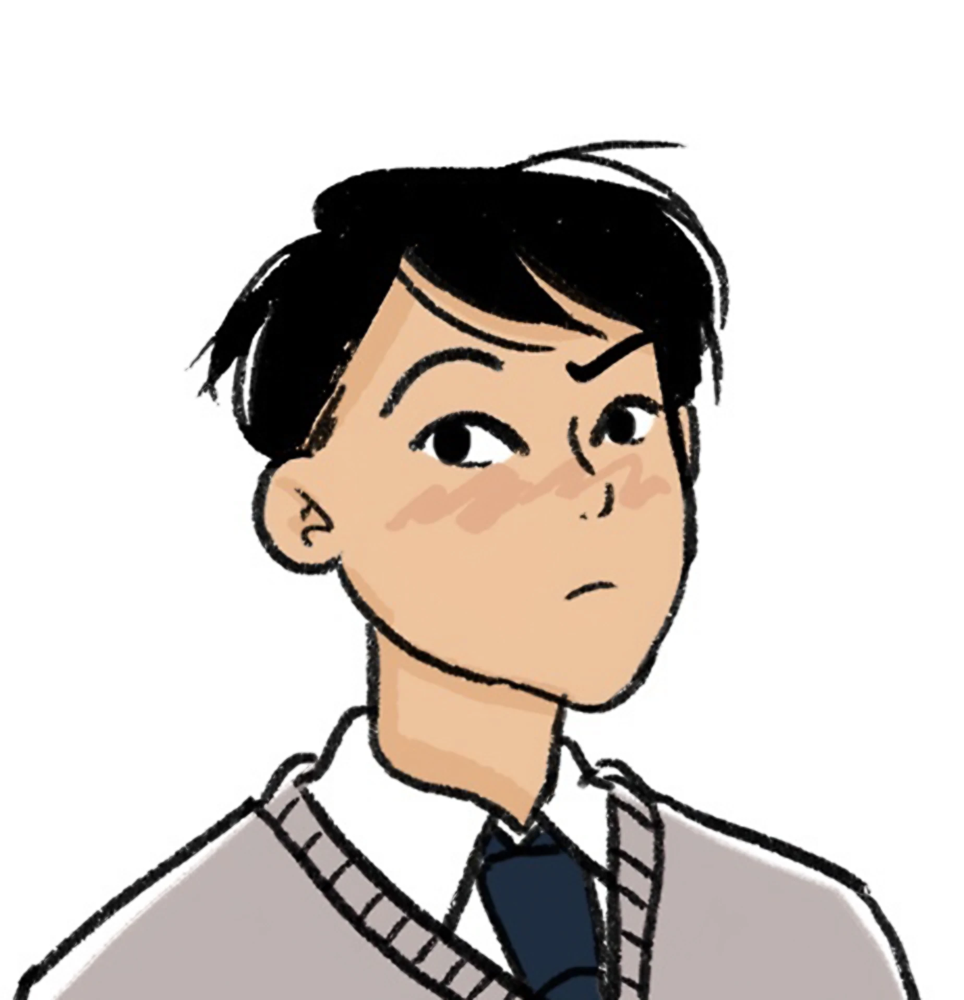
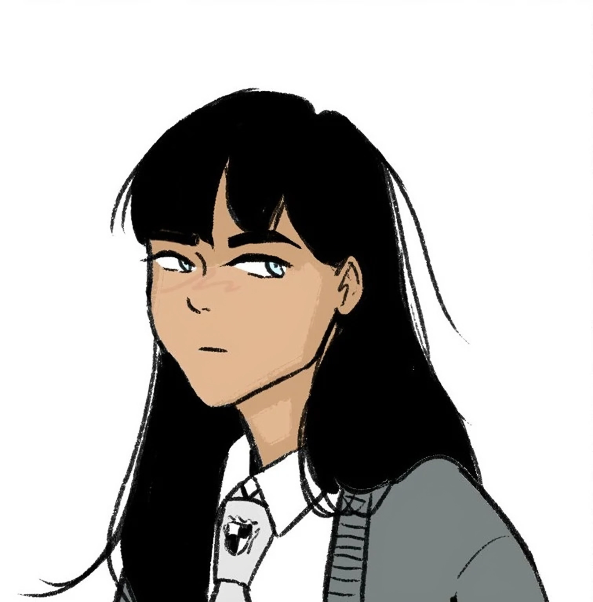
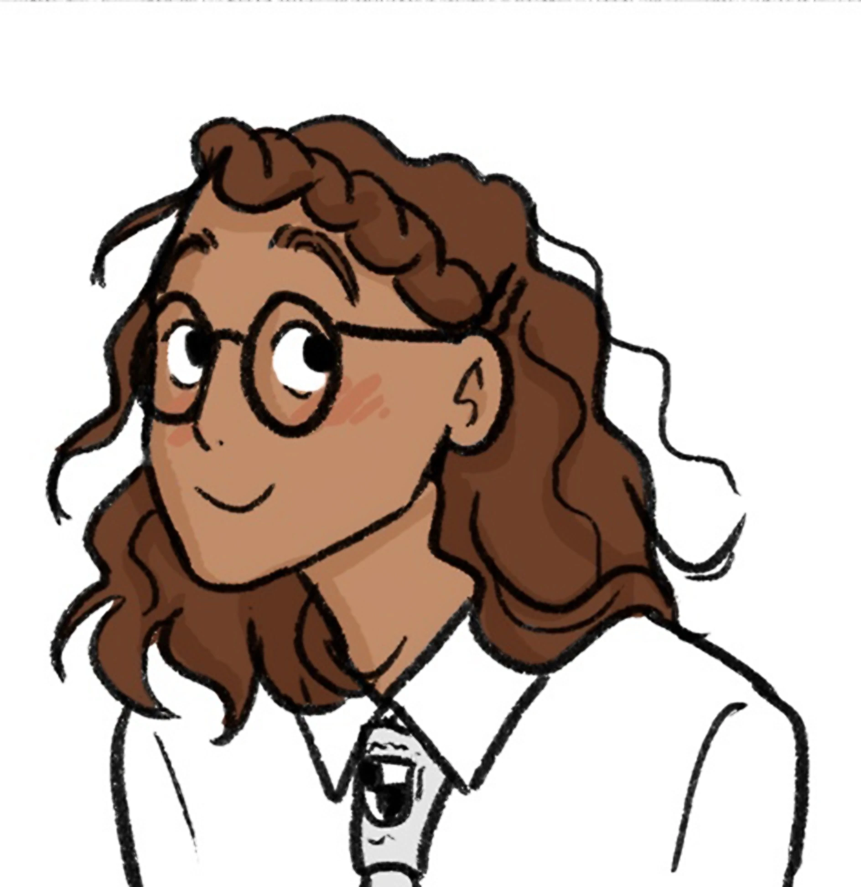
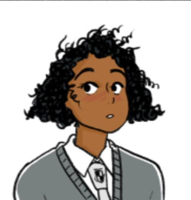

Na Netflix, Heartstopper é uma adaptação bastante fiel da HQ homônima,
escrita por Alice Oseman. A série é muito elogiada pela caracterização
de seus protagonistas e pela abordagem sensível de temáticas LGBTQIA+.
Aqui há um pouco mais sobre caracteristicas do perfil de cada um dos personagens
Charles "Charlie" Spring
Who are you: Namorado do Nick
School Year: 1º EM
Age: 15
Birthday:27 de abril
MBTI: ISTP
Fun Fact: Eu amo ler!
Nicholas "Nick" Nelson
Who are you: Namorado do Charlie
School Year: 2º EM
Age: 16
Birthday: 4 de setembro
MBTI: ESFJ
Fun Fact: Eu sou ótimo em fazer bolos!

Tao Xu
Who are you: Amigo do Charlie
School Year: 1º EM
Age: 15
Birthday: 23 de setembro
MBTI: ENFP
Fun Fact: Eu tenho um blog de resenhas de filmes

Victoria "Tori" Spring
Who are you: Irmã do Charlie
School Year: 2º EM
Age: 16
Birthday: 5 de abril
MBTI: INFJ
Fun Fact: Eu odeio (quase) todo mundo

Elle Argent
Who are you: Amiga de Charlie e Tao
School Year: 1º EM
Age: 15
Birthday: 20 de março
MBTI: INFJ
Fun Fact: Eu adoro desenhar moda!

Tara Jones
Who are you: Namorada de Darcy
School Year: 2º EM
Age: 16
Birthday: 7 de julho
MBTI: ESFP
Fun Fact: Eu toco clarinete na banda da escola!
Darcy Olsson
Who are you: Namorada de Tara
School Year: 2º EM
Age: 16
Birthday: 25 de novembro
MBTI: ENFP
Fun Fact: Eu sou ótima em fazer piadas!
Últimas noticias
Aqui você encontrará as ultimas notícias atualizadas sobre HEARTSTOPPER!
ANÚNCIO DE ESTREIA!!
Segunda-feira 13 de maio de 2024, a Netflix revelou a tão aguardada data de estreia da terceira temporada de Heartstopper. A nova season do fenômeno teen chega em 3 de outubro no streaming, data em que seus oito episódios ficarão disponíveis de uma vez na plataforma.
Além do anúncio, o serviço também divulgou uma cena inédita da nova temporada, que mostra Charlie indeciso sobre dizer ou não a Nick que o ama. Em uma conversa com sua irmã, ele confessa que não deseja que o namorado se sinta obrigado a responder o mesmo caso ele se declare. Uma confissão que tem tudo para se transformar em um dos principais dilemas desse novo ano.